Yonsei Korean 1
延世韩国语1 记忆笔记
现在这页分成两层：上半部分保留每课最该背的句子、语法和知识点； 下半部分补上这本书原始的全书词汇索引页，方便你直接查完整词汇。
这页怎么用
先背句子
每课先背 4 句主题句。它们就是这一课最核心的场景和功能。
再看语法
只记住书里这一课要你认识的语法标签，不在这里展开做完整语法书。
最后扫词汇
每课上方先看词汇范围；如果你要查完整词汇，直接跳到最下面的“全书词汇索引”。
先记字母规则
一眼先记住
- 韩文字母共 24 个： 14 个辅音 + 10 个单元音。
- 音节块不是拼音串： 常见结构是 V / CV / CVC，例如 아 / 비 / 말。
- 元音方向决定位置： 竖向元音时辅音放左边，横向元音时辅音放上面。
发音上最容易忘的
- 复元音要当整体记： 不要拆开慢读，先把常见组合整体认熟。
- 收音表面只剩 7 种代表音： ㄱ ㄴ ㄷ ㄹ ㅁ ㅂ ㅇ。
- 松音、送气音、紧音要成组记： 가/카/까, 다/타/따, 바/파/빠, 사/싸, 자/차/짜。
10课速览
| 课次 | 主题 | 书内起始页 | 记忆重点 |
|---|---|---|---|
| 1 | 인사 · 问候 | 1 | 自我介绍、国籍、职业、礼貌结尾 |
| 2 | 학교와 집 · 学校和家 | 31 | 指示词、存在句、地点表达 |
| 3 | 가족과 친구 · 家人和朋友 | 69 | 家人称呼、敬语、并列和地点 |
| 4 | 음식 · 饮食 | 105 | 点餐、喜好、想要、提议 |
| 5 | 하루 생활 · 一天生活 | 143 | 时间、日期、顺序、过去式 |
| 6 | 물건 사기 · 购物 | 183 | 买礼物、问价、讲价、定语词尾 |
| 7 | 교통 · 交通 | 221 | 问路、乘车、理由、禁止 |
| 8 | 전화 · 电话 | 263 | 电话号码、转接、约定、条件句 |
| 9 | 날씨와 계절 · 天气和季节 | 299 | 天气比较、季节活动、推测 |
| 10 | 휴일과 방학 · 节假日和假期 | 337 | 计划、兴趣、频率、不能 |
Lesson 1 · 인사 · 问候
先背这 4 句
안녕하십니까?
你好！
어느 나라 사람입니까?
你是哪国人？
회사원이 아닙니다.
我不是公司职员。
반갑습니다.
认识你很高兴。
记忆词汇
记忆语法
文化小记
韩国人的名字与问候礼仪。先把正式问候句背熟，后面很多课都会反复出现这种礼貌结尾。
Lesson 2 · 학교와 집 · 学校和家
先背这 4 句
이것이 교과서입니까?
这是课本吗？
지도도 있습니까?
也有地图吗？
은행이 어디에 있습니까?
银行在哪里？
집이 어디입니까?
你家在哪里？
记忆词汇
记忆语法
文化小记
周末可以去的地方，以及韩国的位置和大小。语言重点是“这里/那里/那个”和“有/没有”。
Lesson 3 · 가족과 친구 · 家人和朋友
先背这 4 句
가족 사진을 봅니다.
我在看家庭照片。
부모님은 어디에 계십니까?
你父母在哪里？
공기도 좋고 조용합니다.
空气很好，也很安静。
대학교에서 경제학을 공부합니다.
在大学学习经济学。
记忆词汇
记忆语法
文化小记
称呼和敬语很重要，尤其是 부모님, 계시다 这种尊敬形式。文化点是 아줌마 / 아저씨 的使用感觉。
Lesson 4 · 음식 · 饮食
先背这 4 句
식당에 갑니다.
我去餐厅。
무슨 음식을 좋아하십니까?
你喜欢什么食物？
저는 불고기를 먹고 싶습니다.
我想吃烤肉。
여기 물 좀 주십시오.
请给我们拿一点水。
记忆词汇
记忆语法
文化小记
韩国饮食文化和餐桌礼貌。这里要把“喜欢什么”“想吃什么”“请给我”三类表达分开记。
Lesson 5 · 하루 생활 · 一天生活
先背这 4 句
지금 몇 시예요?
现在几点？
오늘이 몇 월 며칠이에요?
今天是几月几号？
일곱 시 반에 일어나요.
我七点半起床。
친구하고 무엇을 했어요?
你和朋友做了什么？
记忆词汇
记忆语法
文化小记
这课最实用的是时间系统，要把汉字词数字和固有词数字的使用场景分开记。
Lesson 6 · 물건 사기 · 购物
先背这 4 句
선물을 사러 갑시다.
我们去买礼物吧。
좋지만 좀 비싸요.
很好，但是有点贵。
얼마예요?
多少钱？
깎아 주세요.
请便宜一点。
记忆词汇
记忆语法
文化小记
购物这课会带出数字读法和生日。语言重点是“去买”“虽然……但是……”“请给我优惠一点”。
Lesson 7 · 교통 · 交通
先背这 4 句
실례지만 길 좀 묻겠습니다.
不好意思，我想问一下路。
지하철로 40분쯤 걸립니다.
坐地铁大约需要 40 分钟。
사람이 많으니까 조심하세요.
人很多，请小心一点。
과일 가게 앞에 세워 주세요.
请停在水果店前面吧。
记忆词汇
记忆语法
Culture / Knowledge
这课同时连着“首尔观光”和“首尔地铁”。先把问路和描述所需时间的句子练熟，旅行最常用。
Lesson 8 · 전화 · 电话
先背这 4 句
전화번호 좀 가르쳐 주세요.
请告诉我你的电话号码。
정민철 씨 계세요?
郑敏哲在吗？
늦으면 전화할게요.
如果晚了，我会给你打电话。
웨이 씨 좀 바꿔 주세요.
请帮我转给小伟。
记忆词汇
记忆语法
文化小记
韩国人与手机、常用紧急电话号码。表达上把“我来做”“如果……就……”和“请转接”分开记最清楚。
Lesson 9 · 날씨와 계절 · 天气和季节
先背这 4 句
저는 스키를 탈 수 있는 겨울이 좋아요.
我喜欢可以滑雪的冬天。
날씨가 조금 흐린데요.
天气有一点阴。
오늘보다 따뜻할 것 같아요.
大概会比今天暖和一些。
저기에서 사람들이 운동을 하고 있어요.
人们在那里运动呢。
记忆词汇
记忆语法
文化小记
韩国春花、梅雨和黄沙。天气课适合一边背形容词一边背比较句和推测句。
Lesson 10 · 휴일과 방학 · 节假日和假期
先背这 4 句
설악산에 가려고 해요.
我打算去雪岳山。
시간이 있을 때는 여행을 가요.
有时间的时候我去旅行。
극장에 자주 못 가요.
我不能经常去电影院。
산책을 하고 집에서 쉬었어요.
我散了步，然后在家休息了。
记忆词汇
记忆语法
文化小记
韩国电影和韩式练歌房。最后一课适合把“计划”“兴趣”“频率”“做不到”这些表达做横向整理。
全书词汇索引
下面直接放入教材末尾的词汇索引页，属于这本书自带的完整词汇参考。 每条词后面都带有课次、项次，以及像 기본어휘 / 기본대화 / 과제 / 문법 / 정리 这样的来源标记。
用法建议：先看上面的课程句子，再到这里查陌生词。点击图片可以单独放大查看。
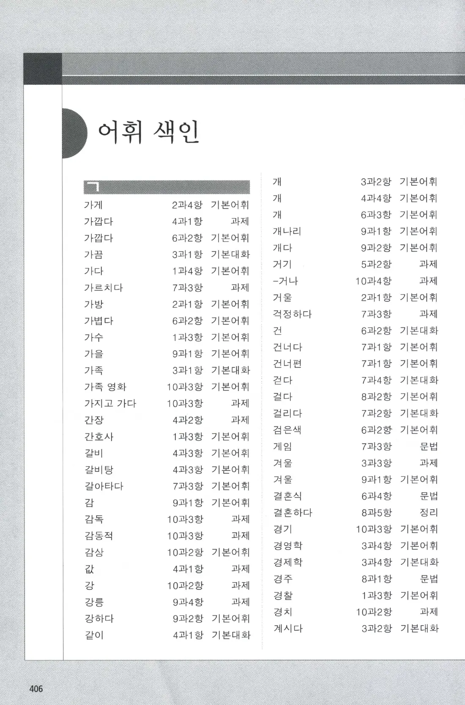
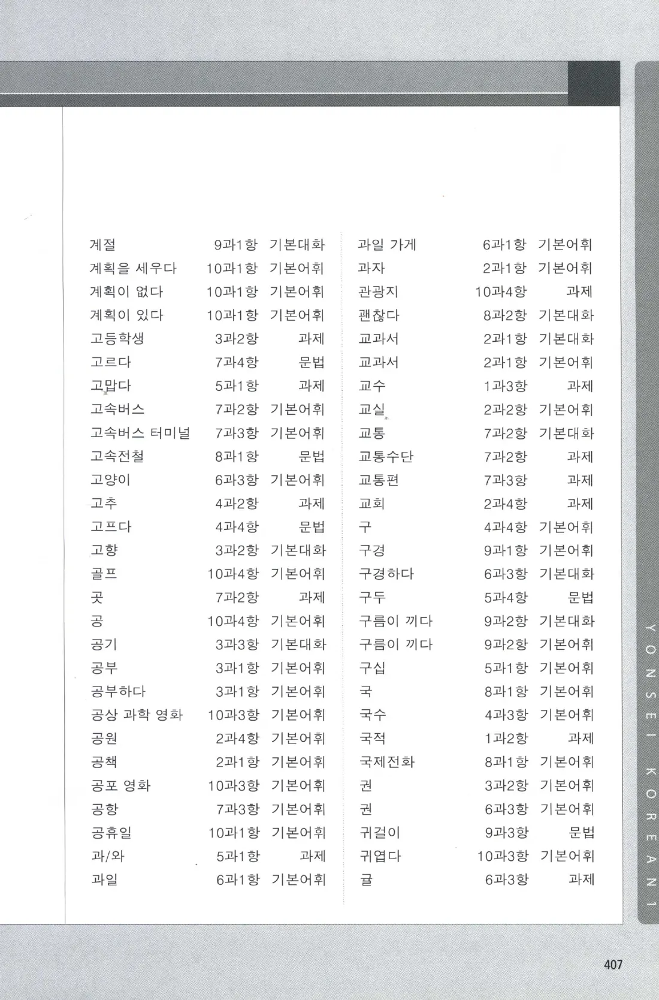
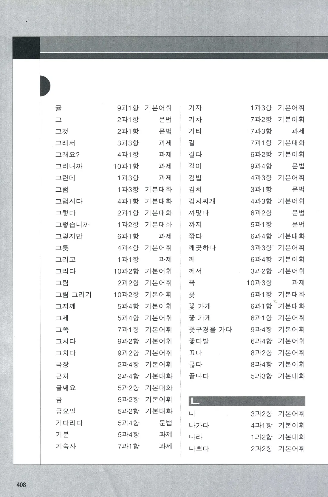
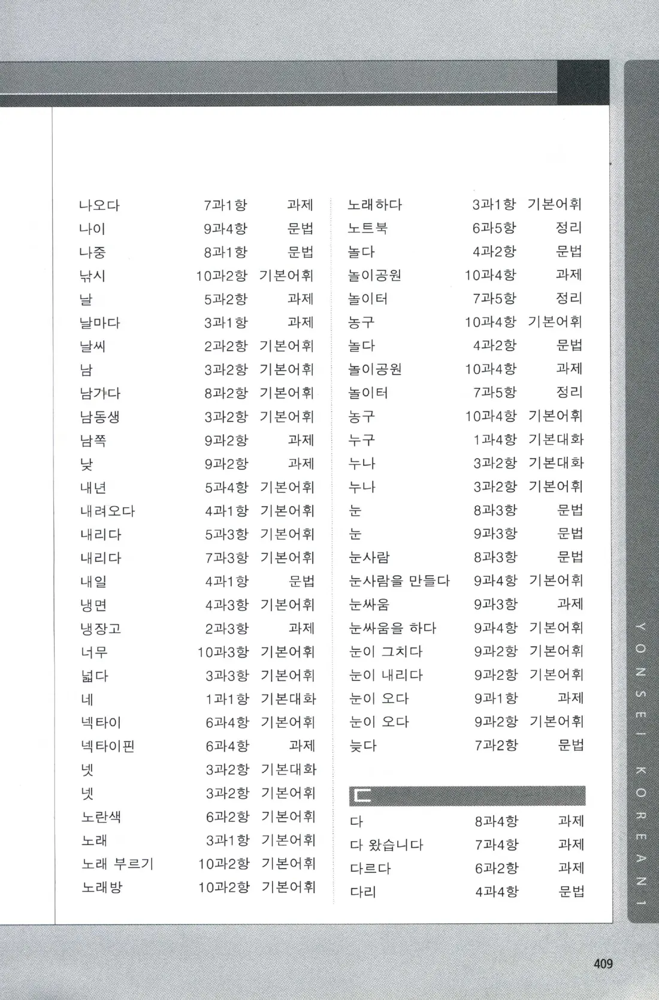
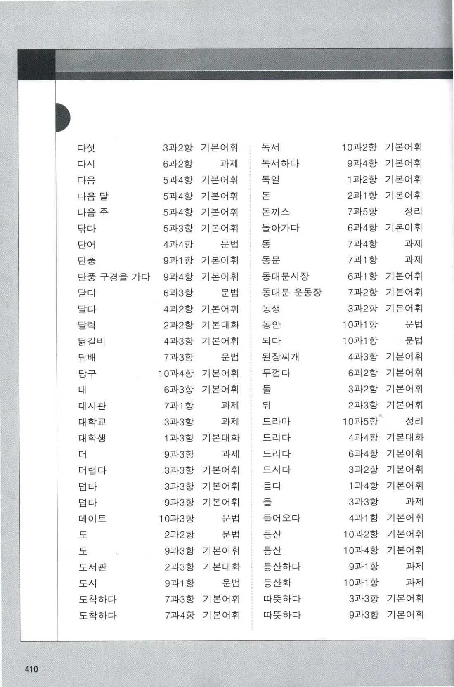
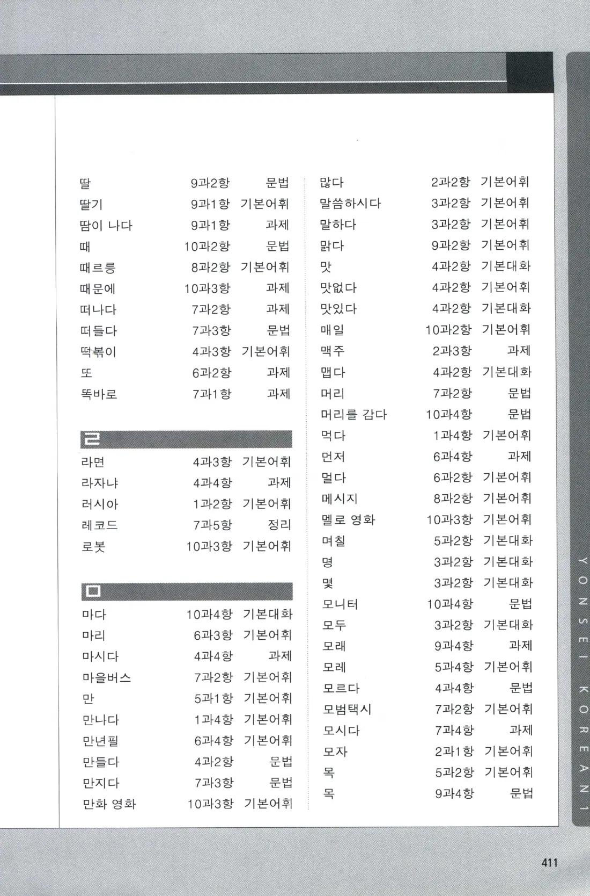
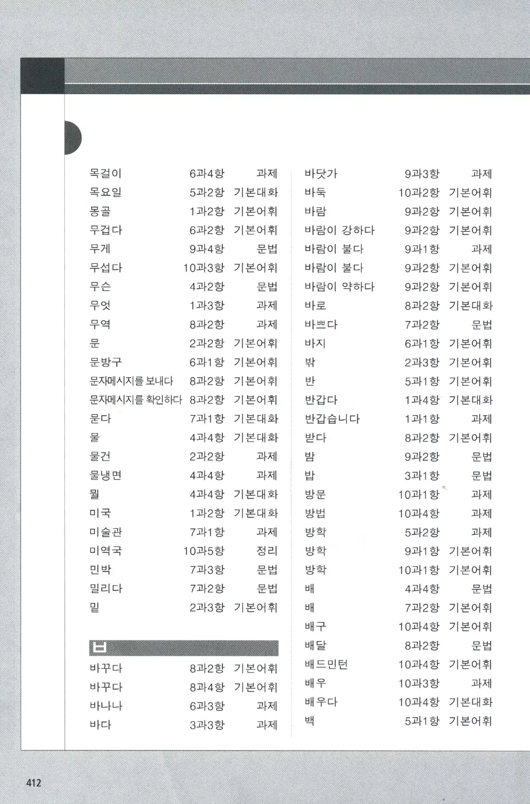
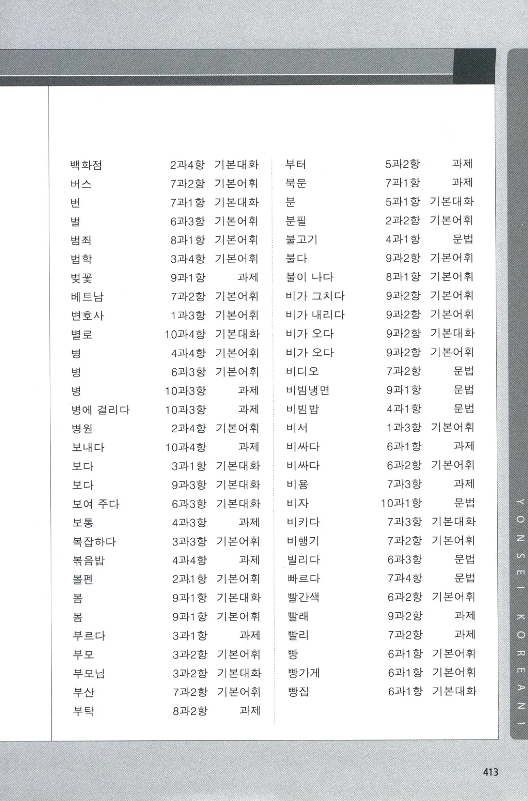
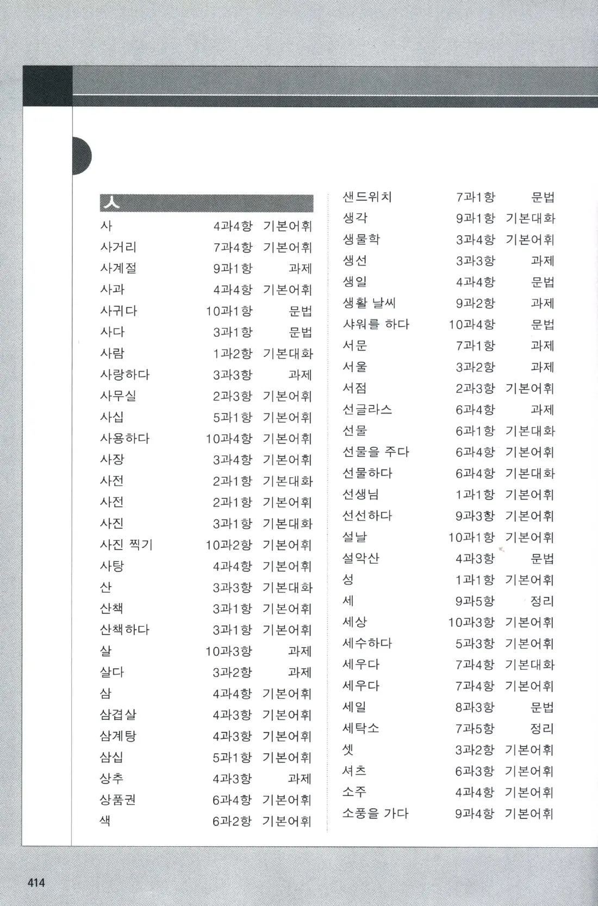
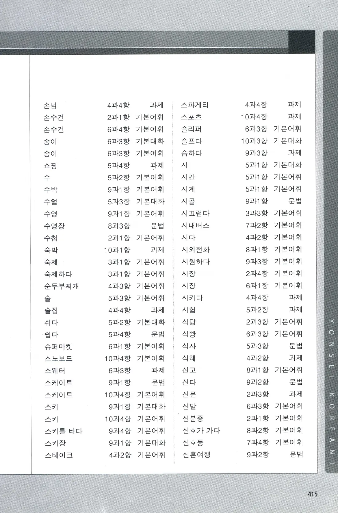
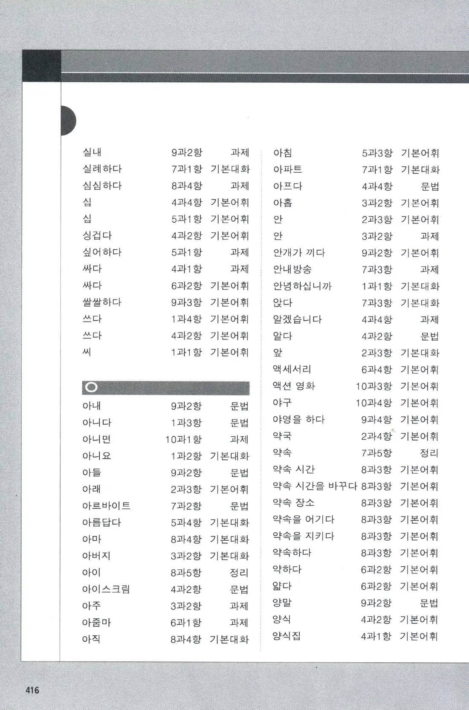
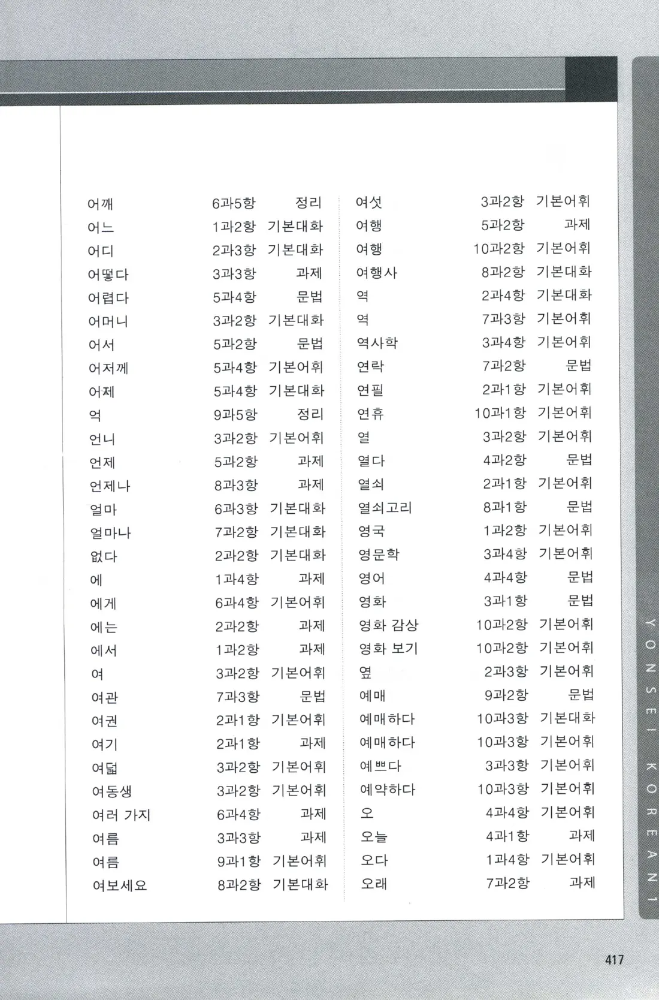
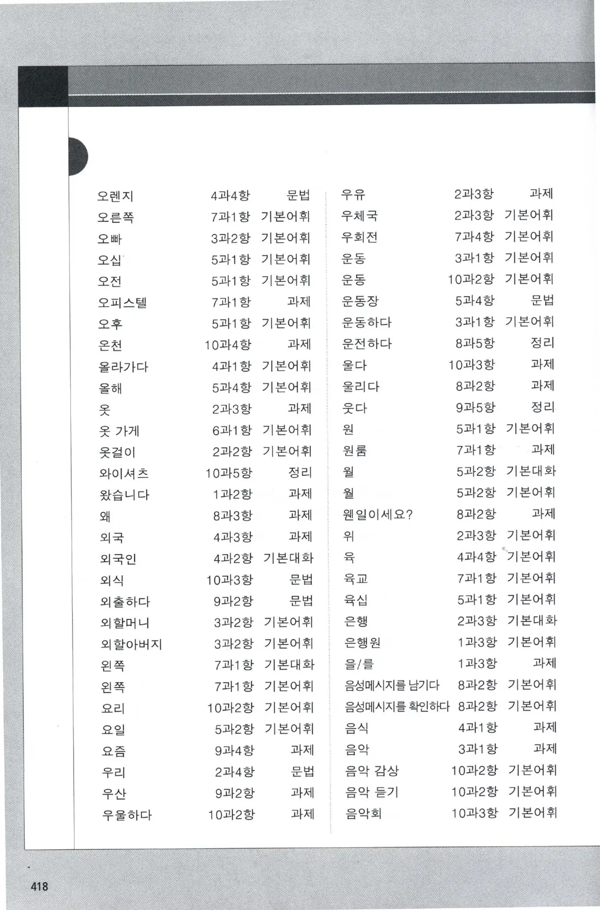